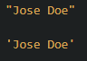
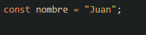

JavaScript
¿Que es?
JavaScript (JS) es un lenguaje de programación utilizado en páginas web para hacerlas más interactivas y dinámicas. Permite agregar funcionalidades como validaciones de formularios, animaciones, cambios de contenido y respuestas a acciones del usuario. Es ejecutado en el navegador web y también se puede usar en aplicaciones móviles y servidores. En resumen, JavaScript hace que las páginas web sean más dinámicas y brinda una mejor experiencia al usuario.
La etiqueta <script> :
En HTML, el código JavaScript se inserta entre las etiquetas <script> y </script>.
Esta etiqueta se debe encontra al final del codigo.
Los scripts también se pueden colocar en archivos externos:
Los scripts externos son prácticos cuando se usa el mismo código en muchas páginas web diferentes.
Los archivos JavaScript tienen la extensión de archivo .js .
Para usar una secuencia de comandos externa, coloque el nombre del archivo de secuencia de comandos en el atributo
src (fuente) de una etiqueta script :
Tipos de salida en JS
JavaScript puede "mostrar" datos de diferentes maneras:
-
Escribir en un elemento HTML, usando innerHTML.
-
Escribir en la salida HTML usando document.write().
-
Escribir en un cuadro de alerta, usando window.alert().
-
Escribiendo en la consola del navegador, usando console.log().
Sintaxis JavaScript
Valores Fijos
Las dos reglas de sintaxis más importantes para valores fijos son:
-
Los números se escriben con o sin decimales:
-
Las cadenas son texto, escrito entre comillas simples o dobles:

Variables en JS
En un lenguaje de programación, las variables se utilizan para almacenar valores de datos.
JavaScript usa las palabras clave var, let y const para declarar variables .
Se utiliza un signo igual para asignar valores a las variables.
En este ejemplo, x se define como una variable y se le asigna el valor 6:
Comentarios en JS
El código después de barras oblicuas dobles // o entre /* y */se trata como un comentario .
Los comentarios se ignoran y no se ejecutarán:
Variables en JS
En JavaScript, las variables se utilizan para almacenar y manipular datos. Son contenedores que pueden almacenar diferentes tipos de información, como números, texto, arreglos y objetos. Aquí tienes un resumen de cómo funcionan las variables en JavaScript:
-
Declaración de variables: Para crear una variable en JavaScript, se utiliza la palabra clave var, let o const,
seguida de un nombre único para identificarla.
Ejemplo:
-
Asignación de valor: Después de declarar una variable, se le puede asignar un valor utilizando el operador de
asignación (=).
Ejemplo:
-
Tipos de datos: JavaScript es un lenguaje de tipado dinámico, lo que significa que no es necesario especificar
el tipo de dato al declarar una variable. El tipo de dato se infiere automáticamente según el valor asignado.
Ejemplo:
-
Uso de variables: Una vez que se ha asignado un valor a una variable, se puede utilizar en operaciones,
expresiones o para mostrar información.
Ejemplo:
-
Cambio de valor: En JavaScript, las variables pueden cambiar de valor durante la ejecución del programa.
Ejemplo:
-
Ámbito de las variables: Las variables en JavaScript pueden tener ámbito global (accesibles desde cualquier
parte del programa) o ámbito local (accesibles solo dentro de un bloque de código específico).
Ejemplo:
Constantes en JS
En JavaScript, las constantes son variables cuyo valor no puede cambiar una vez que se les ha asignado. Se declaran utilizando la palabra clave const. Aquí tienes información resumida y precisa sobre las constantes en JavaScript:
-
Declaración de constantes: Para crear una constante en JavaScript, se utiliza la palabra clave const, seguida de
un nombre único para identificarla.
Ejemplo:
-
Asignación de valor: Una vez declarada una constante, se le asigna un valor que no podrá ser modificado
posteriormente.
Ejemplo:
 -
Características de las constantes:
- El valor de una constante no puede cambiarse después de su asignación.
- Las constantes deben inicializarse con un valor al declararlas.
- El nombre de una constante debe ser único dentro de su ámbito.
Operadores en JS
En JavaScript, los operadores se utilizan para realizar diferentes tipos de operaciones en los valores y variables. Aquí tienes una lista de los operadores más comunes en JavaScript:
-
Operadores aritméticos:
- Suma: "+"
- Resta: "-"
- Multiplicación: "*"
- División: "/"
- Módulo (resto de la división):"%"
- Incremento: "++"
- Decremento: "--"
Ejemplo:
-
Operadores de asignación:
- Asignación: =
- Asignación con suma: +=
- Asignación con resta: -=
- Asignación con multiplicación: *=
- Asignación con división: /=
Ejemplo:
-
Operadores de comparación:
- Igualdad estricta: ===
- Desigualdad estricta: !==
- Mayor que: >
- Menor que: <
- Mayor o igual que: >=
- Menor o igual que: <=
Ejemplo:
-
Operadores lógicos:
- AND lógico: &&
- OR lógico: ||
- NOT lógico: !
Ejemplo:

Tipos de datos en JS
En JavaScript, existen varios tipos de datos que se utilizan para almacenar y manipular información.
-
Números (Number): Representan valores numéricos, ya sean enteros o decimales, estos pueden ir con o sin
comillas, si se colocan entre
comillas se consideran como cadenas de texto (strings) en lugar de números y si se intenta realizar una
operación matemática con números escritos entre comillas, JavaScript los tratará como cadenas y
realizará una concatenación en lugar de una operación matemática, lo mas recomendable es colocarlos sin comillas
pera que JS los tome como valores numéricos y asi se puedan realizar operaciones:
Ejemplo:
-
Cadenas de texto (String): Representan una secuencia de caracteres encerrados entre comillas simples o dobles.
Ejemplo:

-
Booleanos (Boolean): Representan un valor lógico verdadero o falso.
Ejemplo:
-
Arreglos (Array): Almacenan una colección ordenada de elementos en una variable.
Ejemplo:
-
Objetos (Object): Representan una colección de propiedades y valores relacionados, ya sean de una persona o de
un
objeto.
Ejemplo:
-
Valores nulos (Null) y sin definir (Undefined): Representan la ausencia de un valor o un valor no asignado.
Ejemplo:
Funciones en JS
En JavaScript, las funciones son bloques de código reutilizables que se utilizan para realizar tareas específicas.
-
Ejemplo de declaración de función y llamada de función:
En este ejemplo, se define la función saludar que muestra el mensaje "¡Hola!" en la consola. Luego, se llama a la función saludar() para ejecutar el código dentro de ella y se muestra en la consola el mensaje "¡Hola!". -
Ejemplo de función con retorno de valor:
En este ejemplo, se declara la función sumar que recibe dos parámetros a y b. Dentro de la función, se realiza la suma de a y b utilizando el operador + y se devuelve el resultado con la palabra clave return. Luego, se llama a la función sumar pasando los argumentos 5 y 3, y se guarda el resultado en la variable resultado. Finalmente, se muestra el valor de resultado en la consola, que en este caso es 8.
Objetos en JS
Los objetos en JavaScript son estructuras de datos que permiten almacenar y organizar información relacionada.
Imagina que los objetos en JavaScript son como contenedores que pueden almacenar diferentes tipos de información.
Cada contenedor tiene etiquetas (propiedades) y dentro de ellas puedes guardar valores.
Por ejemplo, supongamos que queremos representar información sobre una persona. Podemos crear un objeto llamado
persona y agregar propiedades como nombre, edad y profesión, junto con sus respectivos valores:
En este caso, nombre, edad y profesion son las propiedades del objeto persona. "Juan", 30 y "programador" son los
valores asociados a cada propiedad.
Para acceder a los valores de un objeto, podemos utilizar la notación de punto o la notación de corchetes. Por
ejemplo:
Podemos modificar los valores de las propiedades de un objeto de la siguiente manera:
En este caso, cambiamos el valor de la propiedad profesion de "programador" a "diseñador".
Matrices en JS
Las matrices, también conocidas como arrays, son estructuras de datos que nos permiten almacenar múltiples valores en una sola variable. Pueden contener diferentes tipos de datos, como números, cadenas, objetos, e incluso otras matrices.
-
Ejemplo 1:
En este ejemplo, se crea una matriz llamada numeros que contiene una secuencia de números del 1 al 5. Cada número se separa por comas y se encierra en corchetes []. -
Ejemplo 2:
Aquí, se declara una matriz llamada frutas que almacena diferentes nombres de frutas. Cada nombre de fruta se escribe entre comillas y se separa por comas.
Podemos acceder a los elementos de una matriz utilizando su índice, que es la posición del elemento en la matriz. Los índices comienzan desde 0 para el primer elemento. -
Ejemplo 3:
Aquí, se declara una matriz llamada frutas que almacena diferentes nombres de frutas. Cada nombre de fruta se escribe entre comillas y se separa por comas.
Podemos acceder a los elementos de una matriz utilizando su índice, que es la posición del elemento en la matriz. Los índices comienzan desde 0 para el primer elemento. -
Ejemplo 4:
Aquí, se modifica el valor del elemento en el índice 2 (que es el número 3 originalmente) y se le asigna el valor 10. Al imprimir numeros, vemos que el valor ha sido actualizado.
if, else y else if en JS
Las estructuras condicionales nos permiten tomar decisiones en nuestro código dependiendo de ciertas condiciones. En JavaScript, utilizamos las siguientes estructuras:
-
if: Nos permite ejecutar un bloque de código si una condición es verdadera.
En este ejemplo, si la variable edad es igual o mayor a 18, se imprimirá en la consola el mensaje "Eres mayor de edad". -
else: La estructura else se utiliza junto con if y nos permite especificar un bloque de código que se ejecutará
si la condición en el if es falsa.
En este caso, si la variable hora es menor a 12, se mostrará "Buenos días". Si no, se ejecutará el bloque de código dentro del else y se mostrará "Buenas tardes". -
else if: La estructura else if nos permite evaluar múltiples condiciones consecutivas si la condición anterior
es falsa. Puede haber varios bloques else if después del if, pero solo se ejecutará el primero que cumpla su
condición. si la condición en el if es falsa.
En este ejemplo, si la variable hora es menor a 12, se mostrará "Buenos días". Si no, se evaluará la siguiente condición y si hora es menor a 18, se mostrará "Buenas tardes". Si ninguna de las condiciones anteriores se cumple, se ejecutará el bloque de código dentro del else y se mostrará "Buenas noches".
Bucles en JS
Los bucles nos permiten ejecutar un bloque de código repetidamente mientras se cumpla una condición específica. En JavaScript, los bucles más comunes son el bucle for y el bucle while.
-
Bucle for: Se utiliza cuando se conoce de antemano cuántas veces se debe repetir el bloque de código.
En este ejemplo, el bucle for se ejecutará 5 veces. La variable i se inicializa en 0 y mientras i sea menor a 5, se ejecutará el bloque de código. Después de cada iteración, se incrementa el valor de i en 1. En la consola se mostrarán los números del 0 al 4. -
Bucle while: Se utiliza cuando no se sabe exactamente cuántas veces se debe repetir el bloque de código, pero se
conoce la condición de salida.
En este ejemplo, el bucle while se ejecutará mientras la variable contador sea menor a 5. En cada iteración, se mostrará el valor de contador en la consola y luego se incrementará en 1. El bucle se detendrá cuando contador sea igual o mayor a 5. -
Bucle do-while: Similar al bucle while, pero la condición se evalúa al final, lo que garantiza que el bloque de
código se ejecute al menos una vez.
En este ejemplo, el bucle do-while se ejecutará al menos una vez, ya que la condición se evalúa después de ejecutar el bloque de código. Luego, mientras i sea menor a 5, se repetirá el bloque y se incrementará el valor de i. Los números del 0 al 4 se mostrarán en la consola.
Precedencia en JS
La precedencia de operadores describe el orden en que se realizan las operaciones en una expresión aritmética.
La multiplicación ( *) y la división ( /) tienen mayor precedencia que la suma ( +) y la resta (-).
-
Como en las matemáticas tradicionales, primero se hace la multiplicación:
-
Cuando se usan paréntesis, las operaciones dentro de los paréntesis se calculan primero:
-
Las operaciones con la misma precedencia (como * y /) se calculan de izquierda a derecha:
Clases en JS
En JavaScript, las clases son una forma de crear objetos con propiedades y métodos. Proporcionan una sintaxis más clara y orientada a objetos para la programación. Aquí tienes una explicación breve sobre cómo trabajar con clases en JavaScript:
-
Declaración de una clase: Para declarar una clase, se utiliza la palabra clave class, seguida del nombre de la
clase en CamelCase.
En este ejemplo, se declara una clase llamada Persona. La clase tiene un constructor que recibe dos parámetros: nombre y edad. Dentro del constructor, se asignan los valores recibidos a las propiedades nombre y edad del objeto utilizando la palabra clave this. -
Métodos de instancia: Los métodos de instancia son funciones que se definen dentro de la clase y se asocian con
cada objeto creado a partir de la clase.
En este ejemplo, además del constructor, se agrega un método llamado saludar() a la clase Persona. El método saludar() muestra un mensaje en la consola que incluye el nombre de la persona. Al llamar a este método en un objeto creado a partir de la clase Persona, se mostrará el mensaje en la consola.